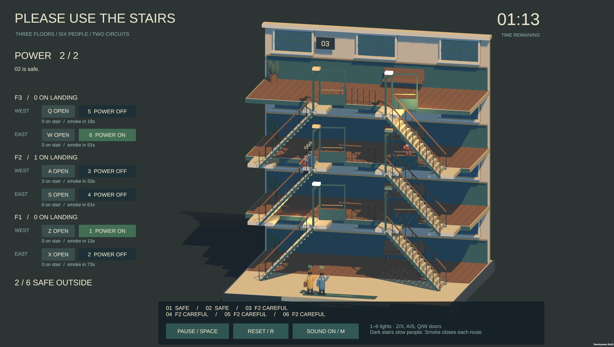
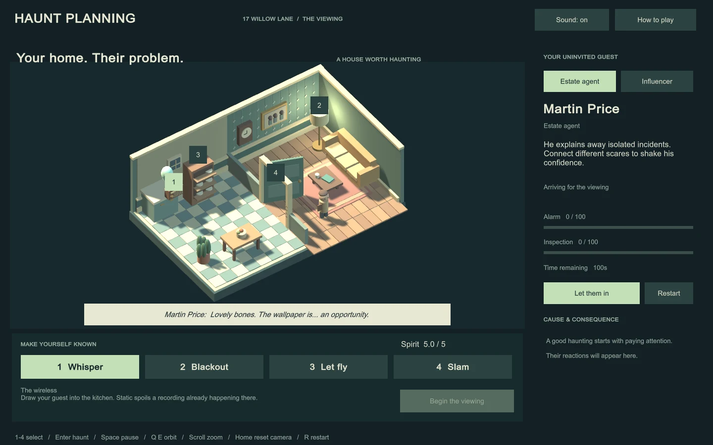
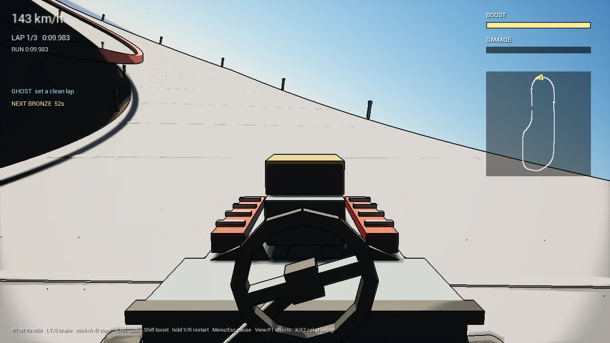
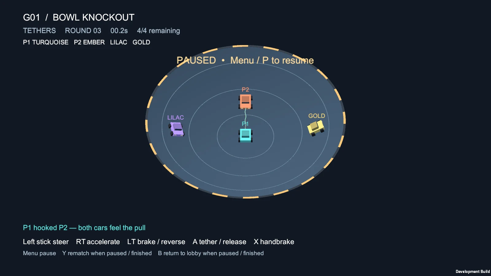

Games & other work
Chaotic Tanx
Chaotic Tanx Tank battler Open editionClose edition
FreshOS
FreshOS Operating system Open editionClose edition
The 198x family
Classic machines. New things to make with them.
Code Like It's 198x
Code198x Learn to make games Open editionClose edition
Emu198x
Emu198x Multi-system emulator Open editionClose edition
Asm198x
Asm198x Assemblers & disassemblers Open editionClose edition
Inside the edition
Build programs for retro CPUs with source-compatible assemblers and disassemblers.
Explore Asm198xPlay198x
Play198x Retro media player Open editionClose edition
Inside the edition
Open vintage images and music in your browser, using your own files.
Explore Play198xCat198x
Cat198x Collection tools Open editionClose edition
Inside the edition
Catalogue, verify and organise retro software and media collections.
Explore Cat198xBuild198x
Build198x Asset & media tools Open editionClose edition
Inside the edition
Convert graphics, pack assets and prepare media for classic machines.
Explore Build198xIsa198x
Isa198x Instruction-set specifications Open editionClose edition
Inside the edition
Executable CPU instruction-set specifications and the disassemblers built on them.
Isa198x on GitHubFormat198x
Format198x Disk & media libraries Open editionClose edition
Inside the edition
Reusable libraries for reading and writing retro disk and media formats.
Explore Format198xDebug198x
Debug198x Debug information format Open editionClose edition
Inside the edition
Connect assembled code with source lines, symbols and addresses through a shared format.
Explore Debug198xFrom the notebook
Four unpublished games. Ideas being worked out through play.
Please Use the Stairs
Please Use the Stairs Unpublished prototype View experimentClose edition
From the notebook
Guide six people down three floors while sharing power between two stair sections.


Haunt Planning
Haunt Planning Unpublished prototype View experimentClose edition
From the notebook
Possess household objects and adapt your scares to different visitors.


Elevated Stunt Racing
Elevated Stunt Racing Unpublished prototype View experimentClose edition
From the notebook
Drive exposed elevated tracks with boost and risky landings.


Bowl Knockout
Bowl Knockout Unpublished prototype View experimentClose edition
From the notebook
Car combat in a bowl, with elastic tethers.

